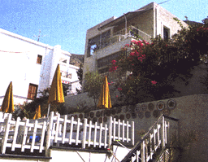

| Strand | 800 m | Restaurant | - | Etasjer | 3 |
| Supermarked | 0 m | Bar | Ja | Heis | - |
| Til buss | 50 m | TV-rom | - | Senger | 18 |
| Sentrum | 5 m | Salong | - | Tlf. i leil./rom | - |
| Basseng | Ja | Resepsjon | Ja | TV i leil./rom | - |
| Barnebass. | Ja | Deponering | Ja | Kjøleskap | Ja |
| Solterrasse | Ja | Elektrisitet | 220 v | Byggeår | 1994 |
Adr.: Panormos, GR-85200 Kalymnos.
Tlf.: 00 30 243/48026. Fax.: 00 30 243/23950.
Rengjøring 6 ganger i uken. Trafikkstøy.
|
 | |||||
| Strand | 100 m | Restaurant | - | Etasjer | 2 |
| Supermarked | 10 m | Bar | - | Heis | - |
| Til buss | 100 m | TV-rom | - | Senger | 20 |
| Sentrum | 50 m | Salong | - | Tlf. i leil./rom | Ja |
| Basseng | - | Resepsjon | - | TV i leil./rom | - |
| Barnebass. | - | Deponering | - | Kjøleskap | Ja |
| Solterrasse | - | Elektrisitet | 220 v | Byggeår | 1989 |
Adr.: Massouri, GR-852 00 Kalymnos.
Tlf.: 00 30 243/47887. Fax: 00 30 243/47905.
Rengjøring 6 ganger i uken. P.g.a. mange trapper innen anlegget er ikke stedet egnet for folk med gangbesvær. Musikkstøy.
![[SN Horisont]](http://www.sn.no/img/horisont.gif)